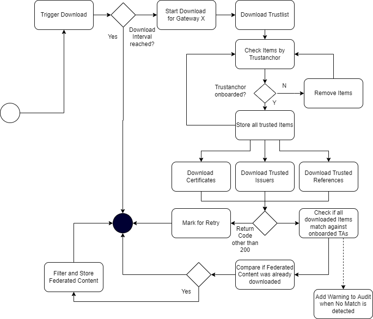
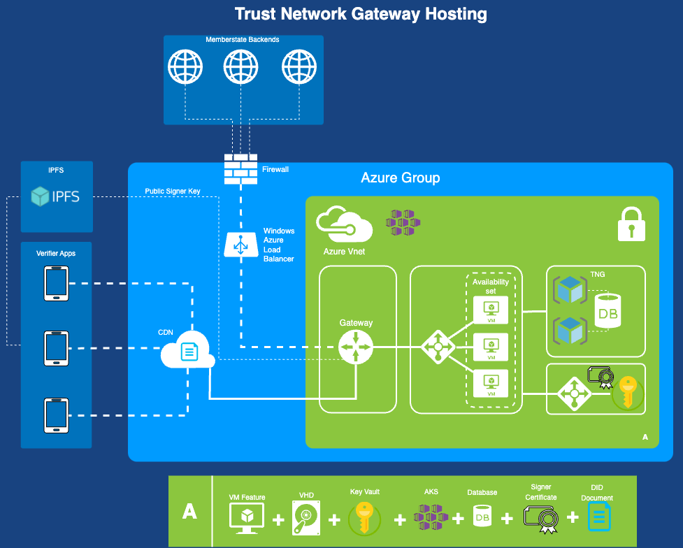

机器翻译——未经人工审校
本页面为自动翻译。尚无任何人审校或裁定此译文，可能存在错误。以源语言页面为准。 阅读原文（英文）
Machine translation — not reviewed by a person
This page was translated automatically. No person has reviewed or adjudicated this translation, and it may contain errors. The source-language page is the authoritative text. Read the original (English)
数据模型与交换
参与者
参与者生成、管理健康信息或据其采取行动。与 SMART 信任网络相关的参与者如下。
业务规则库
由信任网络内的某一节点提供的可信服务，用于按照临床质量语言（CQL）规范共享业务规则。
产品目录
用于管理和发布可验证数字健康证书中可能引用的卫生产品、器械和商品的产品主数据。
术语服务
用于管理和发布各种本地代码系统与可验证数字健康证书所使用的必需词汇表之间的映射。
发布密钥
触发事件
信任网络参与方或其授权的签发方之一，生成新的公私密钥对用于文档签名。
消息语义
参见 EU DCC Open API 文档。密钥用途为 DSC，表示文档签名证书
预期操作
信任锚将验证所提交的密钥材料，并将其分发给其他信任网络参与方
镜像本地 PKD
触发事件
消息语义
预期操作
步骤包括：
- 本地 PKD 入网（一次性）。入网可包括评估本地 PKD 格式、提供联合 PKD 访问权限，以及签署业务协议。
- 镜像本地 PKD 公钥（定期）
- 将镜像的公钥合并到主列表中（定期）
- 对主列表进行数字签名以供分发
参与联合 PKD 的本地 PKDs 预计应：
- 拥有用于签发可信健康文件（例如 COVID 凭证）的现有公钥基础设施
- 已具备允许共享公钥的许可/政策
- 可以按以下格式之一共享公钥：
联合 PKDs 预计应：
- 具备检索聚合服务中所代表的本地公钥目录/节点成员的手段
- 已具备允许共享来自信任节点成员的公钥的许可/政策
- 拥有用于签署节点成员密钥列表的现有公钥基础设施
- 可以按以下格式共享公钥列表：
签署健康证书（HCERT）声明
触发事件
HCERT 的声明载荷已生成，可由代表信任网络参与方的签发方进行签名。
消息语义
输出宜为经有效签名的 HCERT
预期操作
发布验证密钥 - API
触发事件
信任网络参与方向信任网络网关发布密钥，供验证应用程序使用。密钥可以按多种用途进行编码，包括遵循证书治理，依据其 $usage 和信任 $domain
消息语义
参见 Swagger API
预期操作
检索验证密钥 - DID
触发事件
消息语义
宜使用 GDHCN DID 规范检索密钥。
预期操作
验证应用程序入网信任网络后，即可检索验证密钥。检索到的验证密钥列表可用于以下业务流程：
- 通过检索用于签署主列表的签名密钥，使联合 PKD 入网（一次性）。
- 从联合 PKD 检索主列表并验证签名（定期）。
- 对可验证 QR 码（例如疫苗凭证二维条码）进行反序列化，以确定密钥 id。
- 从主列表中检索与该密钥 id 相关联的公钥，或使用缓存的密钥。
- 验证
- 二维条码中的密码学签名。
- 签发方使用该密钥签发此类证书的权限。
- 密钥的到期日期。
- 证书的到期日期。
- 该证书不在现有的撤销列表中。
- 签发密钥仍存在于签发机构的信任列表中（未被撤销）。
- 签发密钥仍存在于验证机构的信任列表中。
- 证书上的姓名/身份与身份证件（ID）相符。
- 该证书通过验证管辖区的业务规则。
检索验证密钥 - API
触发事件
消息语义
参见 Swagger API
预期操作
验证应用程序入网信任网络后，即可检索验证密钥。检索到的验证密钥列表可用于以下业务流程：
- 通过检索用于签署主列表的签名密钥，使联合 PKD 入网（一次性）。
- 从联合 PKD 检索主列表并验证签名（定期）。
- 对可验证 QR 码（例如疫苗凭证二维条码）进行反序列化，以确定密钥 id。
- 从主列表中检索与该密钥 id 相关联的公钥，或使用缓存的密钥。
- 验证
- 二维条码中的密码学签名。
- 签发方使用该密钥签发此类证书的权限。
- 密钥的到期日期。
- 证书的到期日期。
- 该证书不在现有的撤销列表中。
- 签发密钥仍存在于签发机构的信任列表中（未被撤销）。
- 签发密钥仍存在于验证机构的信任列表中。
- 证书上的姓名/身份与身份证件（ID）相符。
- 该证书通过验证管辖区的业务规则。
宜使用 GDHCN DID 规范检索密钥。
请求业务规则更新 - API
触发事件
消息语义
参见 Swagger API
预期操作
请求业务规则更新 - API
触发事件
消息语义
应当充当业务规则库：
- 使用临床质量语言（CQL），将卫生政策（例如“需完成全程疫苗接种”）表达为可执行的业务规则，并作为 FHIR Library 资源
- 通过可信卫生服务将业务规则作为 FHIR Library 资源发布
可选：
- 以 FHIR Provenance 资源的形式提供业务规则的数字签名
- 向 PKD 提供公钥
预期操作
执行业务（规则）
触发事件
消息语义
预期操作
验证应用程序：
- 前提条件：对一个或多个 QR 码执行联合验证工作流
- 根据用例确定一条（或多条）要执行的业务规则
可选：
- 从 PKD（本地 PKD，或通过聚合/联合 PKD）检索业务规则签名公钥
- 验证业务规则的真实性
- 使用 FHIR Structure Map 将 QR 码内容映射为所需的 FHIR 资源
- 对 FHIR 资源内容执行 CQL 业务规则
请求值集 - API
触发事件
消息语义
参见 Swagger API
预期操作
请求值集 - FHIR
触发事件
消息语义
有关针对术语服务的事务，参见 IHE Sharing Value Sets and Concept Maps。
预期操作
执行业务（规则）
触发事件
消息语义
预期操作
工作流
例行同步
数字健康证书的验证
联合 PKD 聚合
联合验证
动态业务规则验证
信任域
信任域包括：
- 与可验证数字健康证书的使用相关的既定用例和业务流程；这些可验证数字健康证书可以通过数字健康信任网络的信任网络参与方所启用的可信服务进行签发或验证。
- 确定或定义适用的可信服务和可验证数字健康证书的开放、可互操作技术规范；以及
- 一套政策和监管标准，描述 GDHCN 参与方在运营可信服务和使用可验证数字健康证书方面的预期行为（例如数据最小化、隐私、使用范围）。
GDHCN 信任域的代码包含在 GDHCN 信任域值集中。
信任域模型
《GDHCN 行政与运营框架》是信任域的法律来源。信任域逻辑模型遵循其三部分定义：用例（由 DAK 组件建模）、技术规范，以及政策和监管标准。信任域还指明其使用条款，即由参与方可以声明其所遵循的政策组成的 ValueSet。
参与方在可验证凭证中列出这些政策，每项政策对应一个 termsOfUse 条目。例如，VHL 接收方按照 IHE ITI VHL 的可验证凭证选项这样做。
该模型允许每个部分为空，但空的部分属于 QA 错误。没有任何 BPMN 业务流程使用的使用条款 ValueSet 同样属于 QA 错误。
| 信任域 | 定义于 | 使用条款 |
|---|---|---|
| DDCC | 框架，附件一 | DDCC 使用条款 |
| IPS-PILGRIMAGE | 尚无框架附件；依据 IPS 朝觐 IG 起草 | IPS.HAJJ.CONSENT |
COVID-19 证书数字文档（DDCC）
2021 年 8 月发布的COVID-19 证书数字文档（DDCC）以及 2022 年 3 月发布的针对检测结果的类似指导（https://www.who.int/publications/i/item/WHO-2019-nCoV-Digital_certificates_diagnostic_test_results-2022.1 ）是相关 FHIR 实施指南的参考依据。本实施指南（IG）是已发布指导中核心数据元素的可计算表示，并映射到标准术语。这些以 FHIR 逻辑模型形式表示的数据模型和以 FHIR 值集形式表示的术语，是各种凭证格式之间互操作性的基础。该 IG 提供 FHIR Structure Map 和 Concept Map，用于定义所支持的凭证格式与核心数据集之间的转换，从而使业务规则能够针对一组通用数据元素执行。
DDCC QR 码与逻辑模型{:width=”850em”}
目前，以下内容规范通过世卫组织（WHO）的COVID 证书数字文档（DDCC）获得认可：
- 欧盟数字 COVID 证书（DCC）（必需）
- DIVOC（可选）
- 国际民用航空组织（ICAO）可见数字印章 - 非受限型（VDS-NC）（可选）
- Smart Health Cards（SHC）- 免疫接种（可选）
源规范
映射到 DDCC 核心数据集的各证书格式，其“权威来源”规范可能难以找到。上述各证书格式最广为人知的文档列于参考文献中：
- EU DCC：[ehn-trust-framework-2021], [ehn-dcc-techspec-vol1-2021], [etsi-en-319-102-1-2016], [ec-dcc-techspec-vol1-5], [ec-dcc-vol1-2022], [eu-implementing-decision-2021-1073]
- DIVOC：
- 元素由 JSON-LD 定义。截至 2023-02-12，最新的疫苗 JSON-LD 上下文和检测结果 JSON-LD 上下文见此处。请注意，证书中嵌入的 DIVOC 专用 JSON-LD 上下文的 URI 无法解析。
- DIVOC 的文档见此处，但其中不包括元素级描述（例如逐个元素的术语绑定）。
- 元素级的术语绑定必须从更通用的文档中推断。
v2JSON-LD 上下文为疫苗引入了evidence.icd11Code元素，但没有文档说明该元素绑定到哪些代码，或该元素是否在生产环境中使用。疫苗类型/产品没有其他可计算的表示形式。
- ICAO：[icao-vds-nc]
- SMART Health Cards：[smart-health-cards-spec], [hl7-shc-vaccination-ig]
PH4H
泛美数字健康高速公路（PH4H）实施指南描述了 GDHCN 在美洲区域的使用。
IPS 朝觐（IPS-Pilgrimage）
IPS 朝觐实施指南包含世卫组织（WHO）关于朝觐期间可验证 IPS 的指南的机器可读表示。它以可计算语言明确编码了计算机可互操作的逻辑，包括数据模型、术语和逻辑表达式，以支持在朝觐使用场景中实施 IPS。
术语表
这些概念以及下表包含本文档中使用的缩略语和术语。
| 术语 | 描述 |
|---|---|
| DCC | 数字新冠证书（Digital COVID-19 Certificate）。 |
| DDCC | 新冠证书数字文档（Digital Documentation COVID-19 Certificate）。 |
| DCC 网关 | REST Web 应用程序，用于在相互连接国家的国家后端之间交换文档签名者证书、DCC 值集、DCC 业务规则和撤销列表，以用于 DCC 验证。 |
| CMS | 加密消息语法（Cryptographic Message Syntax），依据 RFC5652。该语法用于对任意消息内容进行数字签名、摘要、认证或加密。 |
| JRC | 欧盟联合研究中心（European Joint Research Centre）。 |
| OG | 源网关（Origin Gateway）。 |
| CQL | 临床质量语言（Clinical Quality Language）。 |
引言
本架构规范提供了建立联邦信任网络的手段，以用于健康记录，例如世卫组织（WHO）COVID-19 证书数字文档（DDCC）技术规范和实施指导文件。这基于以下假设：信任网络参与方可能建立自己独立的国家信任网络、参与区域信任网络，或希望参与全球联邦信任网络。此外，信任网络参与方可能希望这些信任网络能够在国内和跨司法管辖区的用例中实现互操作。虽然建立此类可互操作信任网络所需的具体治理和政策考虑不在本文档范围之内，但其意图是本文档中的技术设计能够支持信任网络参与方的司法管辖区内和跨司法管辖区政策。
本文档中的信任网络网关（TNG）规范旨在支持 DDCC 规范，该规范作为各类健康记录（例如数字 COVID 证书，如欧盟的 DCC、SMART Health Cards、DIVOC 和 ICAO）的桥接/总括规范。本规范以 EU Digital Covid Certificate Gateway 为基础，并在以下几个重要方面对其进行了扩展：
- 支持网关之间的联邦以及对等信息交换；
- 支持访问元数据内容（例如值集/编码、业务规则），并明确遵循 HL7 FHIR 规范；
- 为数字 COVID 证书的撤销提供明确的手段；以及
- 支持（可选的）在线验证和校验工作流。
在当前的 DCC 系统中，集中式网关在所有已连接的信任网络参与方之间建立信任方面发挥着关键作用。网关运营方遵循一套有完善文档的流程，以确认每个信任网络参与方的身份并对其信任锚进行入网。TNG 在此系统的基础上，使其他组织能够创建信任网关，从而形成一个由信任网关组成的联邦网络，支持所有主要的 COVID-19 凭证证书。
可信方与国家后端
当前的网关设计侧重于在“国家后端”之间建立信任，“国家后端”是指由国家卫生主管部门运营/拥有的系统。它可以是一个脚本、一个全自动解决方案或一个人工流程，能够以可信方式连接网关并上传和下载内容。其背后具体采用何种解决方案不属于网关本身的范围。在 DDCC 范围内，“国家后端”一词的表述过于狭窄，因为可能还有其他方可以将其发布系统连接到信任网络中的网关。因此，在此范围内，“国家后端”一词更宜理解为“可信方”，即已获得可信网关访问权限的参与者。可信网关或联邦器随后也作为其他网关的“可信方”。
网关设计愿景
目前，EU DCC 网关是一个单一的集中式系统，用于在 DCC 参与方之间建立信任，并支持共享业务规则、值集和撤销列表。如果世界上另一个地区建立了这样的网关，目前的架构中没有在两个网关之间交换这些可信数据的方法。在 DDCC 背景下的这一新架构中，多个网关可以相互连接并共享可信数据。从长远看，该架构将允许创建群组，并最终建立联邦。这样的架构可能适用于非官方机构方，并引起其兴趣，例如希望获得网关内容只读副本的航空公司。这可以通过让航空公司入网到一个专门为此目的设立并与官方网关相连的网关来实现。为实现这一目标，该架构必须支持多种运行模式，例如主-从（Primary-Secondary）模式。如前所述，EU DCCG 的当前实现是一个单一的集中式系统，充当存储和管理从可信方收集的必要信息的枢纽。

TNG 宜实现对 DCCG 当前实现的这一增强，其目的是在多个网关之间建立网络，以便在不同方（官方机构、非官方机构、商业机构）之间交换与健康记录相关的公钥材料、值集和业务规则。在此架构中，网关可以通过手动配置连接列表和信任关系连接到任何其他网关。为管理这些连接及其下载行为，引入了一个新组件：联邦器。联邦器是一个微服务，充当两个网关之间的自动下载客户端，并承担可信数据交换的全部职责。

此数据交换的支柱是当前连接器库的功能，该库连接到网关并为使用方提供最必要的功能。该库通过增加连接多个网关（而非一个网关）的功能而得到增强。
用例
双边入网
在双边入网用例中，连接器库作为可信方连接到多个网关，以下载/上传内容。这需要在两个网关上都完成入网。

对等交换
在对等交换用例中，两个或多个网关能够以双向方式交换其数据。源网关和目标网关允许彼此下载数据。所有交换的数据都将追加到网关内的现有数据中。如果两个网关之间的数据交换协议允许，这还可以包括第三方网关的数据。

主-从交换
在主-从交换用例中，一个或多个网关作为主来源，另一组网关作为从来源。在此模式下，从网关将下载主网关的数据，并将其追加到自身数据集中，或用下载的数据替换自身数据集。主网关忽略从网关的数据，从网关仅作为主网关的只读副本。主导的国家后端可以连接到主网关，并将数据上传到这一个主网关。

组合来源交换
在组合来源交换用例中，网关将从多个网关下载数据并将其追加到自身数据集中，从而形成一个组合集合。

信任中介
网关内容可用于在仅松散耦合的参与者之间建立信任，例如可信方 A 知晓、但可信方 B 并不直接知晓的验证方设备。

为了在参与者之间建立信任，可以生成一个依赖网关信任列表的信任中介。该中介随后可以利用这些信息决定是否应建立信任关系。例如，拦截器可以检查某个 JWT 的签名是否由某证书的公钥创建，而该证书由已入网的 SCA 签名。当 SCA 已入网并受信任时，即可证明该签名是由获得此 SCA 信任的某方做出的。于是，对该参与者的信任也随之成立。

架构概述
信任网络网关的目的是在信任网络内实现安全、可信的数据交换。
TNG 交换的数据
元数据交换
TNG 使用 HL7 FHIR 标准，提供了一种可互操作的手段，用于交换支持数字 COVID-19 证书的密钥元数据。这尤其包括：
- 值集宜使用 IHE 共享值集和概念映射（SVCM）配置文件中定义的事务进行共享，并包括以下资源：
- HL7 FHIR ValueSet 资源，用于共享各种数字 COVID 证书规范所引用的编码和术语（例如允许的疫苗或检测）。 - 可以使用 HL7 FHIR ConceptMaps 在各司法管辖区定义的编码与 DDCC 规范编码之间提供映射。
- 业务规则宜遵循知识工件（Knowledge Artifact）和临床决策支持基础设施，包括以下资源：
- HL7 FHIR Library 资源，用于共享以临床质量语言（CQL）表达的业务规则库
- HL7 FHIR PlanDefinition 资源，用于根据相关的验证或连续性照护用例指明应执行哪条业务规则。
为了对这些需求进行抽象，信任网络网关将引入一项名为“可信引用”的新功能，使网关能够共享任何类型的服务端点，而无需共享内容本身。为了向后兼容，DCC 业务规则和值集的功能仍保留在架构中，但可以通过配置文件配置为停用。业务规则和值集的显式端点将被可信引用取代，因为医疗内容差异很大，宜交由 FHIR 服务器实现来处理，而不是在网关本身中实现每项服务。
公钥交换
TNG 提供了一种共享用于签名数字 COVID 证书的公钥的方式，并提供已撤销公钥证书的列表。
引用交换
TNG 提供存储安全可信资源（即 FHIR 值集或业务规则）的功能，确保系统中的所有参与者都准确了解重要的来源。这些引用可以以 URL 的形式存储。
签发方交换
对于某些凭证类型（如可验证凭证），需要 TNG 来确保对这些凭证签发方的信任。大多数凭证都带有签发方 ID，例如 HTTP URL 或 DID，以及用于验证这些凭证的公钥材料。为提供这些签发方的可信列表，网关提供了上传签发方 ID 的功能。
解决方案概念
为实现该架构愿景，现有的 DCC 网关将通过一个实现 TNG 联邦器组件的微服务得到增强。该联邦器组件部署在网关旁边，负责处理与其他联邦器的通信。每个联邦器都能够下载其他组件的数据。不预期将数据上传到其他联邦器（每个网关都通过联邦器进行下载）。可信使用方可以决定是否使用联邦信息，并且必须显式激活此功能。总之，联邦器既充当网关连接器/同步器，又充当访问联邦数据的接口提供方。

注：DCC 网关核心架构保持不变。只会引入向后兼容的增强功能以支持联邦。
与网关建立连接
DDCC 规范提供了可互操作的标准，用于通过信任网络网关与各系统交换元数据内容，例如可信引用、可信证书和签名者证书。这些元数据通过可信系统进行管理，这些系统需要与信任网络网关之间的连接/代理或外观服务（“TNG 中介”）。在能够上传或下载内容之前，该中介必须完成入网并获得 TNG 运营方的信任。从技术上讲，它可以是一个脚本、一个后端系统或一个 OpenHIM 中介。此类软件的主要任务是与网关建立 mTLS 连接，对上传内容进行签名（例如 CMS 加密消息语法），并上传已签名的 DSC、撤销条目或发布业务规则。后台使用的流程不在范围之内。可能存在人工发布流程、自动决策或其他流程，但至关重要的是，必须确保可信通道以及用于上传/TLS 连接的证书的安全性不受损害。
桥接到其他系统的选项
要将现有系统（即 PKD 或任何其他包含 PKI 证书（例如 ICAO）、业务规则或值集（例如 FHIR 服务器）的系统）桥接到 TNG，需要一个桥接工具，将从源系统接收到的条目转换为网关的 HL7 FHIR / Rest API。例如，要将基于 LDAP 的公钥目录转换到网关，可以设置一个脚本/中介程序来提取 DSC 并自动将其上传到网关。请注意，在此场景中，所有 SCA 必须在上传之前完成入网，此流程才能生效。
在特殊情况下，当需要进行某些“海量数据事务”或大量同步时，可以选择直接在网关数据库之上设置适配器。TNG 本身支持 JDBC，能够接受 mysql 以外的其他数据库。例如，如果使用 Cassandra、MongoDb 或 CouchDB 且有可用的 JDBC 驱动程序，则数据可以跨多个节点复制。
注：数据库复制有其自身的行为，网关的功能无法覆盖每一种可用的数据库。因此，JDBC 功能宜仅在必要时使用，并自行承担风险。
构建块
信任网络网关由以下部分组成：通过回调机制和额外信任列表来源增强的 DCC 网关、一个带有下载客户端的新联邦器组件、一个联邦 API、一个用于出站调用的代理，以及一个连接各服务路由的接口。

信任模型
概述
网关的信任模型基于 DCC 网关的 PKI 证书治理。所有与安全相关的项目都以签名的 CMS 格式上传，并受 PKI 证书治理所定义的各类 PKI 证书保护。信任模型的核心项目是用于保护文档签名者证书的 SCA，以及用于保护上传内容的 CMS 消息。
SCA 与 DSC
为了对数字 COVID-19 证书进行签名，签发机构会创建一个文档签名者证书（“DSC”）。每个机构将其 DSC 分发给验证方，以便 DSC 可用于证明已签发证书的有效性。为了在所使用的 DSC 与国家信任列表的分发方之间建立信任链，每个 DSC 都由一个根机构（“SCA”）签名，以验证 DSC 本身的真实性。出于安全原因，SCA 被声明为物理隔离（air gapped），其公开部分随后入网到网关中。在入网期间，SCA 由网关运营方签名，以确立对初始检查的信任。入网之后，每个传入的 DSC 都可以对照受信任的 SCA 进行检查。运营方签名（由 DCCGTA 签名）建立了与不同证书的信任，例如证书治理所定义的上传者证书和 TLS 认证证书。

CMS 用法
为了在网关中以相同安全级别支持多种内容，信任模型引入 CMS 作为安全相关项目的通用容器。CMS 格式使得无论内容为何，都能对签名和加密进行标准化，适用于单个或多个接收方。

增强
DCC 网关的当前信任模型仅支持连接多个后端以及在它们之间交换内容（见下文）。

为实现该架构愿景，网关信任模型将得到增强，使联邦器能够支持多个信任锚。为此，TNG 联邦器将使用 TNPTLS 和 TNPUP 证书在源网关中入网，以访问网关内容。在目标网关中，配置源网关的信任锚（并由运营方签名），以将源内容作为有效内容接受。如果验证成功，该内容将作为子集添加到现有网关内容中。随后，已连接的国家后端可以通过激活联邦选项下载所有信息，从而获得两个网关的内容。信任链可以通过已连接网关的信任锚以及已入网信任锚的信任列表进行验证。

注：联邦器充当一种特殊的“国家后端”，因此除 TNPUP 外，所有与 TNP 关联的证书都将按正常方式入网。
原始公钥
出于安全原因，该信任模型不支持原始公钥，特别是在以下情况下：
原始密钥无法验证其有效性；原始密钥无法由来源（例如根机构）验证；原始密钥可以被轻易创建和共享，而不良治理会向信任网络中的所有参与方“敞开大门”
因此，所有原始密钥都必须转换为 x509 证书封装，才能成为网关上的 DSC，并且该证书必须由已正确入网的 SCA 签名。只要在上传期间（以及在证书中）使用正确的 KID，此过程就不会影响 COVID-19 证书的验证。
DSC 限制
为支持旧版，或满足验证过程中任何区分需求（例如区分正确的签发方或区分 KID 计算方式），建议 DSC 在扩展密钥用途字段中包含以下 OID：
| 字段 | 值 | 描述 |
|---|---|---|
| extendedKeyUsage | 1.3.6.1.4.1.1847.2021.1.1 | 用于检测签发方 |
| extendedKeyUsage | 1.3.6.1.4.1.1847.2021.1.2 | 用于疫苗接种签发方 |
| extendedKeyUsage | 1.3.6.1.4.1.1847.2021.1.3 | 用于康复证明签发方 |
| extendedKeyUsage | 1.3.6.1.4.1.1847.2022.1.20 | 用于 DIVOC 的原始密钥 |
| extendedKeyUsage | 1.3.6.1.4.1.1847.2022.1.21 | 用于 SHC 的原始密钥 |
| extendedKeyUsage | 1.3.6.1.4.1.1847.2022.1.22 | 用于 DCC 中的原始密钥（仅基于公钥计算 kid） |
使用 OID 可以在验证过程中限制文档签名者证书的范围（如果验证方应用支持）。例如，由检测中心签发的欺诈性疫苗接种证书将无效，因为它是由仅限于检测结果证书签发方的 DSC 签名的。
OID 也可以用作验证指示符，因为它可以表明该证书是包裹原始密钥的封装。
DSC 上可能存在其他限制，并可在出现新用例时加以定义。
注：所有 extendedKey 用途都宜在 github 上充分记录，以避免对其用途产生混淆。每个必要的属性都宜进行设置，以最好地支持验证过程。
联邦器架构
概述
联邦器被设计为一个新的子组件，可以作为微服务托管，也可以与网关在同一部署中托管。该行为可在安装期间配置。总体而言，联邦器提供自动下载网关或联邦内容的功能。下载的内容存储在网关数据库中，以便向网关的联邦端点提供内容。可信方随后可以从这些端点下载联邦数据。
黑盒视图

白盒视图

数据模型
####### 联邦器配置
注：网关的每条联邦路由都必须手动配置以进行显式下载，以避免配置上的误解。这出于安全原因而十分重要。所有信任锚都必须完成入网，否则相应内容将被过滤掉。
| 字段 | 类型 | 描述 |
|---|---|---|
| ID | int | 表行的唯一 ID |
| GatewayId | GUID | 另一源网关的唯一 ID。 |
| GatewayEndpoint | Varchar | 另一网关的 URL。 |
| GatewayKid | Varchar | 用于连接另一网关的源网关客户端证书的 KID。（TNG TLS FED |
| GatewayPublicKey | Varchar | 网关签名的 ECDSA 公钥 |
| AuthenticationKID | Varchar Array | 另一网关已入网的 TNGTLS GW 的 KIDs。 |
| TrustAnchorKIDs | Varchar Array | 已入网信任锚（TNG TA）的 KIDs |
| DownloadTarget | String | FEDERATION 或 GATEWAYONLY |
| 模式 | int | 下载模式的枚举：APPEND 或 OVERRIDE。追加模式将下载的数据添加到现有数据集中（现有的联邦数据将被替换）。覆盖模式删除现有数据集（自身的 TNPTLS、信任锚和联邦配置除外） |
| 签名 | Varchar | 信任锚签名 |
####### 下载调度器
| 字段 | 类型 | 描述 |
|---|---|---|
| GatewayID | GUID | 网关的唯一 ID |
| DownloadInterval | int | 下载间隔 |
| LastDownload | TimeStamp | 上次下载时间 |
| 重试 | boolean | 重试标志 |
| 消息 | String | 联邦器的消息 |
| 失败重试次数 | int | 失败重试的次数 |
端点
为了使用联邦数据，网关将新增联邦端点，这些端点是通用 GET 路由的修改变体。通过使用这些新端点，通用内容将以修改后的形式返回：
| 动词 | 在联邦器中使用 | 在中介中使用 | 路由 | 修改/行为 |
|---|---|---|---|---|
| GET | X | X | /trustlist/certificates | 返回可信证书列表。可使用可选查询参数对列表进行过滤。出于旧版原因，所有签名者证书均归入“DSC”证书组（如已启用相应配置文件）。所有其他证书宜通过查询参数交付。 |
| GET | X | X | /trustlist/issuers | 返回可信签发方列表。可使用可选查询参数对列表进行过滤。 |
| GET | X | X | /trustlist/signatures | 返回现有信任列表的签名列表。 |
| GET | X | X | /trustlist/references | 返回可信引用列表。可使用可选查询参数对列表进行过滤。 |
注：所有路由都宜按哈希值过滤所交付的内容，以避免重复交付内容。在某些情况下，两个不同的联邦可能从同一个 TP 接收到相同的内容。
通用查询参数
每个提供联邦数据的路由都必须提供一个查询参数，以通过数组对联邦进行过滤：
/URL?federationId=id1,id2,id3&Domain=DCC&ResourceType=...
如果模式设置为“GATEWAYONLY”，则必须仅用于查询所配置的网关 id。
联邦格式
联邦数据的数据格式宜始终包含一个联邦封装，其中带有 federationID、Domain 和资源类型信息。
下载流程
为了联邦多个网关的数据，引入了一个下载流程，宜确保只有可信数据才被下载到本地网关。在此背景下，可信数据是指本地网关的运营方完全控制哪些联邦数据被接受、哪些不被接受。为实现这一目标，本地网关运营方必须显式地对所有远程联邦器以及可接受数据的信任锚进行入网。这是必要的，因为每个远程联邦器可能会交付多个其他网关的数据（这些网关受源网关运营方信任），但这并不一定意味着这些数据也会自动受到本地网关运营方的信任（必须避免隐式信任关系）。因此，在下载过程中，宜执行一项检查，跳过所有未被本地运营方显式信任的数据。这可以通过将多个信任锚列入白名单以及对 TNPUP 证书进行交叉检查来实现。如果以这种方式建立了信任链，则每项内容都可以被下载、验证并推送到存储中。整个下载流程本身遵循增量下载机制，即每天下载全部内容，而在一天之内仅下载增量。对信任网络而言，这意味着证书会从源网关逐步“冒泡”到所有其他网关。由于这种行为，必须考虑到从创建密钥对到用其签发第一批证书之间大约需要一天时间。

架构修改与变更
EU DCC 网关修改（规范）
数据表
可信方表（见 EU DCC 网关第 4.2.3.1 章）新增了一种证书类型“TRUSTANCHOR”，在信任列表的 API 调用中会出现这些新类型。为区分联邦器和普通可信方，为可信项目引入了一个类型（“TP”、“FEDERATOR”、“GATEWAY”）。为区分证书的不同域，该表还新增一列“DOMAIN”，其默认内容为“DCC”。目前其他内容可以是“ICAO”、“DIVOC”和“SHC”。域会出现在信任列表路由中。
每个数据表（SignerInformation、Trusted Issuer、Trusted Reference 等）新增 UUID、联邦 ID 和 objectVersion 列。主键改为 ID + 联邦 id，以保证唯一性。
SignerInformation 上传
签名者信息端点必须可通过配置文件开启和关闭这些路由。这是为了保持与 EU DCC 网关的向后兼容性。在 DDCC 背景下，这些路由处于停用状态。
可信证书上传
为支持更多用例，网关将新增一些端点，允许上传由信任网络参与方的 SCA 签名的证书。该上传端点的工作方式与签名者信息上传端点类似，区别在于上传内容包含更多关于证书的附加信息。这些附加信息的具体模板必须由模式（schema）定义。证书上传必须支持选择 kid，因为其他标准定义了静态 kid，或以不同于 DCC 的方式选择 kid。如果未提供 kid，则采用 DCC 标准计算方法，即取 SHA256 哈希的前 8 个字节。
健康检查
为了监控网关的状态，引入了健康检查。当网关已启动并正常运行时，新路由返回 200。当网关处于维护状态时，路由必须返回 204。所有其他返回码均表示错误。
路由配置文件
POST、PUT 和 DELETE 的路由将通过配置文件进行修改，使其可配置。这样便可以关闭数据上传，这尤其适用于主-从/组合来源用例。在此设置下，无需对 TNPUP 证书进行入网。
值集与业务规则端点
ValueSet 和业务规则端点必须可通过配置 profile 来启用/停用。
业务规则新增一个端点，可通过业务规则 id 返回单个对象（/rules/{TrustNetworkPartcipant}/{ruleId}}）。
注：引入这一新路由是为了建立向可信引用迁移的路径。在 EU DCC 标准模式下，不会对向后兼容性产生影响。
可信引用
可信引用是由信任网络参与方上传的 URL，用于传播其关于值集、业务规则和其他互操作性内容的服务端点。在可信引用中仅允许公开的 GET 方法。如有必要，授权必须由信任中介负责。
| 字段 | 可选 | 类型 | 描述 | ||
|---|---|---|---|---|---|
| UUID | 否 | String | 对象的 UUID。 | ||
| URL | 否 | String | 可以是 HTTP(s) | ||
| 类型 | 否 | String | FHIR | DCC… | |
| 版本 | 否 | String | 任意版本字符串。 | ||
| 国家 | 否 | String | 该 URL 所关联的信任网络参与方。 | ||
| 服务 | 否 | String | 例如 ValueSet、PlanDefinition 等。 | ||
| Thumbprint | 否 | String | 其背后内容的 SHA256 哈希 | ||
| 名称 | 否 | String | 服务名称 | ||
| SSLPublicKey | 否 | String | 端点的 SSL 证书（如适用）。 | ||
| Content-Type | 否 | String | 内容的 MIME 类型 | ||
| SignatureType | 否 | String | NONE | JWS | CMS |
可信签发方
目前可以将 SCA 作为 DSC 的签发方信任引用进行入网，这使其难以在 PKI 领域之外使用。其他凭证类型（如可验证凭证）使用 DIDs 或其他签发方 ID，这些 ID 不一定与任何 SCA 关联，但其背后有加密材料，例如 JWKs 来源等。为支持这些签发方及其凭证，网关将增加一个可信签发方接口，使其能够接收此类可信 ID。所有这些可信签发方都必须像 SCA 和所有其他证书一样完成入网。
可入网的可信签发方条目定义如下：
| 字段 | 可选 | 类型 | 描述 |
|---|---|---|---|
| URL | 否 | String | 可以是 HTTP(s) 或 DID URL。 |
| 类型 | 否 | String | HTTP 或 DID |
| 国家 | 否 | String | 该 URL 所关联的信任网络参与方。 |
| Thumbprint | 是 | String | 其背后内容的 SHA256 哈希（如适用） |
| 名称 | 否 | String | 服务名称 |
| SSLPublicKey | 是 | String | 端点的 SSL 证书（如适用）。 |
| KeyStorageType | 是 | String | 密钥存储的类型，例如 JWKS、DIDDocument、JKS 等。 |
该条目将在网关中入网，并由信任锚签名。
注：当此表中的 URL 无法解析时，所有可选字段都可以为空。这种做法可信度较低，在运营中宜避免。
部署
####### 约束 TNG 前端可以部署一个网络组件（负载均衡器、API Gateway、反向代理等），由其处理 TLS 连接的客户端证书认证和客户端证书属性提取。在 TLS 卸载之后，是否必须建立内部安全 TLS 网络取决于基础设施。例如，当 TNG 部署在分布式服务网格中时，建议使用受 TLS 保护的通道，例如基于 SPIFFE/SPIRE 的服务网格。哪种模式更适合部署取决于运营方的基础设施。网关本身也可以在 SSL 直通（SSL Passthrough）模式下运行。
所有其他组件（如代理）的配置设置必须保持一致，以避免 HTTP 请求走私（HTTP Smuggling）或类似漏洞。
####### Kubernetes 设置

世卫组织（WHO）信任网络网关修改
在 TNG1 架构的最新版本中，对可信签发方和可信证书进行了更改，以允许在信任验证中使用不同类型的技术。这可以是 X509，也可以是符合 DID 核心规范 [w3c-did-core] 的 DIDs。在规范和对齐的最近几轮迭代中，曾有一些关键点必须在网关中额外予以支持：
- 网关信任列表的原生 DID 支持（DID 文档格式）（可选）
- 以去中心化方式交换 DID 文档，以将其提供给验证方
- 与世卫组织（WHO）保持一致的、面向合格信任网络参与方的入网流程
本节描述这些变更。
技术变更
为了支持符合信任规范的 DID 文档功能，网关将增加一个 DID 文档生成器以及对这些 DID 文档进行签名的能力。这包括一种通过保管库（vault）生成签名密钥并通过去中心化密钥注册表注册签名公钥的方式。

Azure 架构与部署
Microsoft Azure 公有云是世卫组织（WHO）托管的信任网络网关的目标运行环境。TNG 将在 Azure Kubernetes Service（AKS）上运行，并使用 Azure CDN 通过 DID 文档分发公钥。

入网流程概念
世卫组织（WHO）全球数字健康认证网络秘书处负责管理合格信任网络参与方作为可信方连接到信任网络的入网申请。
DID 规范
通用信任列表规范定义了一种最低公分母格式，该格式能够在所有纳入的规范之间互操作，并能支持每个规范所要求的最低功能。这包括考虑满足每个规范的最低安全要求。其设计考虑了以下原则：
- 应当（SHALL）可从每个现有信任网络的格式转换而来
- 应当（SHALL）为所有规范描述从密钥到信任锚的路径
- 应当（SHALL）可缓存
- 应当（SHALL）可合并（信任列表运营方可以整合彼此的条目）
- 应当（SHALL）可供在其业务中需要验证健康凭证的所有利益相关方使用
DID 文档 v2.0
在世卫组织（WHO）GDHCN DID 第 2.0 版发布规范中，根据您的密钥需求创建多个 DID 文件。
DID 文档 v1.0（已弃用）
在世卫组织（WHO）GDHCN DID 第 1.0 版发布规范中，使用单个包含所有密钥的 DID 文件。
GDHCN 信任列表
本规范描述了将全球数字健康认证网络（GDHCN）密钥材料作为去中心化标识符（DID）文档进行发布的方式。DIDs 由 W3C DID 核心规范定义。DID 概念概述了 GDHCN 范围内采用 DID 格式的核心驱动因素和用法。
在现有信任网络之间实现真正互操作性的关键，是在信任列表格式上达成一致。
| 版本 | 状态 | 描述 |
|---|---|---|
| 2.0.0 | 草案 | 2.0.0 处于预发布状态，供验证和反馈。在技术层面，API 中使用“v2”来访问遵循第二版规范的 DID 文档 |
| 1.0.0 | 已发布 | 1.0.0 已弃用，并将被 2.0.0 版取代 |
信任列表 2.0.0
2.0.0 版引入了信任列表的两种变体：嵌入型和引用型。

开发（DEV）、用户验收测试（UAT）和生产（PROD）环境各有一个信任列表，如下表所示：
嵌入型信任列表直接在 DID 文档的 verificationMethod 属性中携带密钥材料，支持即时验证。在 root 层级，它包含从信任网络网关（TNG）导入的所有密钥。
引用型信任列表链接到其他 DID 文档，这些文档可能包含实际的密钥材料。因此，引用型信任列表仅包含可用于解析 DID 文档的 DID id。这有助于保持主信任列表文档简洁，并支持对 DID 结构和密钥材料的动态发现。
DID 信任列表结构
2.0.0 版为 DID 文档引入了层次结构，以支持更细粒度的密钥材料解析和发现。这些 DID 文档按下表中的层级通过以下参数进行参数化。
| 层级 | 描述 |
|---|---|
| root | 适用于 GDHCN 所有可信密钥材料或可信 DID 引用的固定参数。 |
$domain |
包含 GDHCN 针对某一受支持信任域的可信密钥材料或 DID 引用。 $domain 应为GDHCN 信任域值集中的代码之一。 |
$participant |
包含 GDHCN 针对某一可信参与方的可信密钥材料或 DID 引用。 $participant 应为GDHCN 参与方值集中的代码之一。 |
$usage |
包含某一受支持密钥用途类型的可信密钥材料或 DID 引用。 $usage 类型是GDHCN 密钥用途值集中的密钥用途代码之一。 |
各层级按层次结构组织，因此在解析或发现密钥材料时，它们作为遵循 AND 逻辑运算的过滤器发挥作用。注意，“-”字符可在 root 的每个子层级上用作通配符。这样可以省略对相应层级的过滤，从而有效匹配该层级的全部内容。
以下示例概述了嵌入型信任列表的预期行为：
- tng-cdn.who.int/v2/trustlist/did.json 匹配所有
$domain、$participant以及密钥$usage类型的全部密钥。 - tng-cdn.who.int/v2/trustlist/
$domain/$participant/did.json 匹配特定$domainAND$participant的所有密钥$usage类型。 - tng-cdn.who.int/v2/trustlist/-/
$participant/did.json 匹配特定$participant在所有$domain中的所有密钥$usage类型。 - tng-cdn.who.int/v2/trustlist/
$domain/$participant/$usage/did.json 匹配给定$domainAND$participant下特定密钥$usage类型的所有密钥。 - tng-cdn.who.int/v2/trustlist/-/
$participant/did.json 匹配特定$participant在所有$domain中的密钥材料或引用，不过滤密钥用途类型。 - tng-cdn.who.int/v2/trustlist/-/
$participant/$usage/did.json 匹配所有$domain中针对特定$participant和特定密钥$usage类型的密钥或引用。 - tng-cdn.who.int/v2/trustlist/
$domain/-/$usage/did.json 匹配特定$domain的所有$participant的密钥，并按其密钥$usage类型进行过滤。 - tng-cdn-who.int/v2/trustlist/-/- 匹配所有
$domain和所有$participant的密钥材料，不过滤特定的$usage类型，因此 did.json 可能同时包含 SCA 和 DSC 密钥。
以下示例概述了引用型信任列表的预期行为：
- tng-cdn.who.int/v2/trustlist-ref/did.json 包含下一子层级的所有 DID 文档引用（以 DID id 表示）。
- tng-cdn.who.int/v2/trustlist-ref/
$domain/did.json 包含给定$domain的所有$participant层级 DID 文档引用（以 DID id 表示）。 - tng-cdn.who.int/v2/trustlist-ref/
$domain/$participant/did.json 包含所有密钥$usage类型层级的 DID 文档引用（以 DID id 表示），针对所选的$domain和$participant。 - tng-cdn.who.int/v2/trustlist-ref/
$domain/$participant/$usage/did.json 包含一个指向嵌入型信任列表 DID 的引用，该信任列表对应所选的$domain、$participant和密钥$usage类型，并包含密钥材料。
注：引用型信任列表的所有层级都可能包含额外的 DID 引用，链接到可信的外部 DID 文档。
DID 信任列表结构图描述了所定义各层级中信任列表类型之间的引用关系和包含关系。


DID 文档示例
链接到 $domain: DCC、$participant: XXA 且密钥 $usage 类型: DSC 的嵌入型信任列表的引用型 DID 文档。
{
"@context": [
"https://www.w3.org/ns/did/v1",
"https://w3id.org/security/suites/jws-2020/v1"
],
"id": "did:web:worldhealthorganization.github.io:tng-cdn-dev:v2:trustlist-ref:DCC:XXA:DSC",
"controller": "did:web:worldhealthorganization.github.io:tng-cdn-dev:v2:trustlist-ref:DCC:XXA",
"verificationMethod": [
"did:web:worldhealthorganization.github.io:tng-cdn-dev:v2:trustlist:DCC:XXA:DSC"
],
"proof": {
"type": "JsonWebSignature2020",
"created": "2024-11-10T12:00:35Z",
"nonce": "SC56sBBcqqTXh0EPdFlaOWDXxSpwupVa",
"proofPurpose": "assertionMethod",
"verificationMethod": "did:web:raw.githubusercontent.com:WorldHealthOrganization:tng-participants-dev:main:WHO:signing:DID",
"jws": "eyJiNjQiOmZhbHNlLCJjcml0IjpbImI2NCJdLCJhbGciOiJFUzI1NiJ9..MEQCICxoXFEI-o0SupgO0U5BhKjRI1AZaAtAtw_byQMgLm6CAiBTtyJYF7ZMgWTlmivMv5A4In3K6LBEF0AXiCYM2VSSIg"
}
}
$domain: DCC、$participant: XXA 且密钥 $usage 类型: DSC 的嵌入型信任列表，其密钥材料如下：
{
"@context": [
"https://www.w3.org/ns/did/v1",
"https://w3id.org/security/suites/jws-2020/v1"
],
"id": "did:web:worldhealthorganization.github.io:tng-cdn-dev:v2:trustlist:DCC:XXA:DSC",
"controller": "did:web:worldhealthorganization.github.io:tng-cdn-dev:v2:trustlist:DCC:XXA",
"verificationMethod": [
{
"id": "did:web:worldhealthorganization.github.io:tng-cdn-dev:v2:trustlist:DCC:XXA:DSC#XPjhL9Znd1M=",
"type": "JsonWebKey2020",
"controller": "did:web:worldhealthorganization.github.io:tng-cdn-dev:v2:trustlist:DCC:XXA",
"publicKeyJwk": {
"kty": "EC",
"kid": "XPjhL9Znd1M=",
"x5c": [
"MIICuTCCAmCgAwIBAgIUD9k1Q64Eav5r07DQ4Gff/7h7r6QwCgYIKoZIzj0EAwIwdDELMAkGA1UEBhMCWEExFDASBgNVBAgMC1hYQSBDb3VudHJ5MRgwFgYDVQQHDA9YQSBDYXBpdG9sIENpdHkxDDAKBgNVBAoMA1dITzEMMAoGA1UECwwDUiZEMRkwFwYDVQQDDBBOYXRpb25YQV9UTlBfU0NBMB4XDTI0MDgwMjEzNDM0M1oXDTI2MDgwMjEzNDM0M1owfzELMAkGA1UEBhMCWEExFDASBgNVBAgMC1hYQSBDb3VudHJ5MRgwFgYDVQQHDA9YQSBDYXBpdG9sIENpdHkxDDAKBgNVBAoMA1dITzEMMAoGA1UECwwDUiZEMSQwIgYDVQQDDBtIZWFsdGggQWRtaW5pc3RyYXRpb24gb2YgWEEwWTATBgcqhkjOPQIBBggqhkjOPQMBBwNCAAT3TVbWYsSYYarCUv8sfvmv2y0GjDEI+PAkm/92na/zAOoV8O2w7rov/Txk3wwz/jMoKvx+IgSfYoyygtGetYEdo4HEMIHBMA4GA1UdDwEB/wQEAwIHgDAdBgNVHQ4EFgQUhjRj4qGi0+rt7ka7GLiol6q2+78wHwYDVR0jBBgwFoAUoir+zkKsSL7OkG8dPyThX49GLtEwPQYDVR0fBDYwNDAyoDCgLoYsaHR0cDovL2NybC5leGFtcGxlZG9tYWluLmV4YW1wbGUvQ1JML1NDQS5jcmwwMAYDVR0lBCkwJwYLKwYBBAGON49lAQEGCysGAQQBjjePZQECBgsrBgEEAY43j2UBAzAKBggqhkjOPQQDAgNHADBEAiATU7uopFD4U3mLHHQn+0ncg4gb5ZazhhrXMXwzAD4NbgIgd3jcskFPyOoBGut8oyXu+nKYKr5zFCqmXkYlILqCo6Q=",
"MIICMDCCAdWgAwIBAgIUFqWc0xbrcpAettDF8gEymTzDtSkwCgYIKoZIzj0EAwIwdDELMAkGA1UEBhMCWEExFDASBgNVBAgMC1hYQSBDb3VudHJ5MRgwFgYDVQQHDA9YQSBDYXBpdG9sIENpdHkxDDAKBgNVBAoMA1dITzEMMAoGA1UECwwDUiZEMRkwFwYDVQQDDBBOYXRpb25YQV9UTlBfU0NBMB4XDTI0MDgwMjA3MTY0MVoXDTI4MDgwMjA3MTY0MVowdDELMAkGA1UEBhMCWEExFDASBgNVBAgMC1hYQSBDb3VudHJ5MRgwFgYDVQQHDA9YQSBDYXBpdG9sIENpdHkxDDAKBgNVBAoMA1dITzEMMAoGA1UECwwDUiZEMRkwFwYDVQQDDBBOYXRpb25YQV9UTlBfU0NBMFkwEwYHKoZIzj0CAQYIKoZIzj0DAQcDQgAEeKTWEuRQ4ftDRaTBA6++wea8ODmEqCLE/nWTcvcX069g3YlWEokVgEIMEumXcez++bcIayhRYDi4itAqd5DmJ6NFMEMwEgYDVR0TAQH/BAgwBgEB/wIBADAOBgNVHQ8BAf8EBAMCAQYwHQYDVR0OBBYEFKIq/s5CrEi+zpBvHT8k4V+PRi7RMAoGCCqGSM49BAMCA0kAMEYCIQC2+Bl6No20L/uSxr4bJSPDAAJ37UhhH52ppOElxB1dqgIhANbn1ZF0DNWYyH+eKBTrY+14zbzhDxlXWh/Go1OM9ZZ/"
],
"crv": "P-256",
"x": "APdNVtZixJhhqsJS_yx--a_bLQaMMQj48CSb_3adr_MA",
"y": "AOoV8O2w7rov_Txk3wwz_jMoKvx-IgSfYoyygtGetYEd"
}
}
],
"proof": {
"type": "JsonWebSignature2020",
"created": "2024-11-10T12:00:21Z",
"nonce": "Gp3uOuUTNgAFxm31fIjNy7yYt34aOP0g",
"proofPurpose": "assertionMethod",
"verificationMethod": "did:web:raw.githubusercontent.com:WorldHealthOrganization:tng-participants-dev:main:WHO:signing:DID",
"jws": "eyJiNjQiOmZhbHNlLCJjcml0IjpbImI2NCJdLCJhbGciOiJFUzI1NiJ9..MEYCIQD8AbUnGxHgmkqNQTzl6E0ZJocZ0N-vrziFB9-jgRSXbgIhAJUB0Wq5YUJPcywS15JMdoiVJDV_ubWuEZwRnuM5A8QB"
}
}
注：具体密钥使用 base64 编码的密钥 ID（kid）作为标识符。它在验证方法 id 中以片段（#）形式表示，可通过客户端过滤进行解析。
验证信任列表文档
每个信任列表 DID 文档，无论是嵌入型还是引用型，都带有一个 proof。该证明是一个 JSON Web Signature 2020 关联数据证明（Linked Data Proof），由世卫组织（WHO）使用该环境的签名密钥生成。验证方必须（MUST）在信任文档所列的任何密钥或引用之前检查此证明，并且必须（MUST）拒绝证明未通过验证的文档。通过 HTTPS 从其 DID 所指主机获取文档并不能替代此项检查，因为缓存或镜像也可能提供该文档。
注：上述示例文档早于当前格式。如今发布的文档还会在 @context 中携带该环境的 tng-context（例如 https://smart.who.int/trust/tng-context/v1-DEV.jsonld），并且每个验证方法还具有 domain、participant 和 keyusage 成员，每个成员都是仅含单个 code 的对象。
签名方。proof.verificationMethod 指明签名方的 DID。验证方必须（MUST）将其与事先配置的、该环境下其所信任的签名方 DID 进行比较。针对其他任何 DID 验证通过的证明不能证明任何事情。
| 环境 | 签名方 DID |
|---|---|
| DEV | did:web:raw.githubusercontent.com:WorldHealthOrganization:tng-participants-dev:main:WHO:signing:DID |
| UAT | 待确认 |
| PROD | 待确认 |
签名方的 DID 文档有一个验证方法。其 id 为签名方 DID，其类型为 JsonWebKey2020，其 publicKeyJwk 为 EC P-256 密钥，因此如存在 alg，则其值为 ES256。
JSON-LD 上下文。证明对文档的 RDF 形式进行签名，因此签名取决于每个 JSON-LD 上下文的确切内容。验证方必须（MUST）使用下列在本地保存的副本来处理文档。验证方在验证时不得（MUST NOT）解引用上下文 URLs：如果已发布的副本发生变化，同一 JSON 将产生不同的被签名字节。
| 上下文 URL | 签名方使用的内容 |
|---|---|
https://www.w3.org/ns/did/v1 |
W3C DID v1 上下文，sha256 4f3eae5568c9c5f036a082088f9e192019ee06faa78973c87ff91d5421b88dad |
https://w3id.org/security/suites/jws-2020/v1 |
JWS 2020 套件上下文，sha256 d648e05ddc6577827ca2bfd5e931f53e9ebc6e52a57a8da81df4ec8c46ffcd1e |
https://smart.who.int/trust/tng-context/v1-DEV.jsonld, v1-UAT.jsonld, v1.jsonld |
tng-context/v1-DEV.jsonld、v1-UAT.jsonld、v1.jsonld，由本指南发布 |
https://w3id.org/security/v3（仅用于证明选项） |
ld-signatures-java 1.11.0 中捆绑的 security v3 上下文（security-v3-unstable.jsonld），sha256 311be32772d8e42f96c1a6ae899e3fa15efb06c27cfd207d86e8abb9951a3e74 |
tng-context 将 domain、participant 和 keyusage 映射为 ValueSet IRIs，并将 code 映射为 @id。因此，这些代码在被签名形式中成为 IRI，同一密钥在每个环境中的规范化结果各不相同。
JWK。在 JsonWebKey2020 上下文中，publicKeyJwk 是一个 JSON 字面量（@json）。它以其 RFC 8785 规范 JSON 形式进入被签名形式。信任列表 JWK 的成员均为字符串或字符串数组：kty、kid、crv、x、y、n、e 和 x5c。因此，规范形式中不会出现数字格式化问题。验证方可以（MAY）拒绝含有其他任何类型成员值的 JWK。
算法。
- 从文档中移除
proof。使用上述上下文，以 RDF 数据集规范化（URDNA2015）对其余部分进行规范化，并将结果序列化为规范 N-Quads。 - 取不含
jws的proof作为证明选项，并将@context设为https://w3id.org/security/v3。以相同方式对这些选项进行规范化和序列化。 - 签名输入为 64 字节的
SHA-256(proof options N-Quads) || SHA-256(document N-Quads)。 proof.jws是一个分离式 JWS（RFC 7515 附录 F），采用未编码载荷（RFC 7797）。其受保护头部严格为{"b64":false,"crit":["b64"],"alg":"ES256"}。使用签名方的密钥，验证针对ASCII(BASE64URL(header)) || '.' || signing input的 ES256 签名。- 该签名目前是 DER 编码的 ECDSA
SEQUENCE { r, s }（70–72 字节）。RFC 7518 §3.4 要求使用 64 字节的r || s，对签名方的修正在 tng-key-distribution#85 中跟踪。在签名方得到修正之前，验证方宜（SHOULD）接受任一形式，并且宜（SHOULD）严格解析 DER。
规范 N-Quads 按 Unicode 码位对行进行排序。Java 的字符串顺序（UTF-16 代码单元）仅在 U+FFFF 以上的字符上有所不同，而任何信任列表文档都不包含此类字符。验证方可以（MAY）拒绝包含此类字符的文档，而不是猜测其顺序。
一个完整示例（包括其规范 N-Quads、签名输入以及两个相互独立的验证方实现）维护于 litlfred/smart-trust-tools（需求 STT-TRU-006）。
环境与代码库
信任列表使用 GitHub 维护，并通过 GitHub Pages 发布。
信任列表规范 1.0.0
初始规范已弃用。
DID 文档 v1.0（已弃用）
该统一格式基于去中心化标识符（DIDs）v1.0 规范。DID 是采用统一资源标识符（URIs）形式的全球唯一标识符。该 URI 方案包含一个方法名称，对应于可用来解析 DID 文档的标准方法。此 DID 文档是一个结构化的 JSON-LD，它以通用格式记录信任网络成员的每一个现有公钥（无论使用 X.509 还是 JWK 格式）。它允许在不改变底层密钥本身的情况下，为现有密钥添加额外的元数据（例如预期用途和密钥标识符）。它提供了发布信任网络所认可使用的主密钥列表并对其进行加密签名的手段。
所选的统一格式 DID 方法是 did:web，这是一种通过现有 Web（https）基础设施检索 DID 文档的方法。did:web 标识符的形式为 <DOMAIN NAME>:<PATH COMPONENT 1>:...: <PATH COMPONENT N>。解析方式是对由该标识符按 https://DOMAIN NAME/PATH COMPONENT 1/.../PATH COMPONENT N/did.json 构成的 URL 发起 https GET 请求。例如，did:web:example.com:my:path 将从 URL https://example.com/my/path/did.json 解析出 DID 文档。今后可能会支持其他 DID 方法。
DID 文档本身宜包含：
- “id”字段，即 DID 本身，代表 DID 主体（DID Subject），此处即信任列表
- “verificationMethod”字段中的公钥列表
- 通过“proof”字段提供的可选签名
verificationMethod 数组表示与 DID 主体所代表实体内各签发方相关联的各个签名密钥，包括：
id字段，这是一个 DID URL，由本 DID 文档的 DID 和密钥 ID 组成，形式为 DID#key- 公钥的控制者（controller），可以是当前文档（当由信任网络成员发布密钥时），也可以是公钥的来源（在聚合方的情况下）
- 公钥 JWK，包括该密钥的 x509 证书以及至根证书颁发机构的信任链
DID 文档本身可以通过添加一个包含签名详情及用于验证的密钥的“proof”块来进行签名。
有关信任列表规范的 DID 文档格式的更多信息，请参见世卫组织（WHO）DDCC 信任列表规范文档。有关已签名 DID 文档的示例，请参见该文档的附录 A。
电子健康证书规范
版本 1.1.1，2024-02-27
本规范最初由欧洲联盟（EU）制定，以欧洲电子卫生网络的 欧盟数字新冠证书（EU DCC）项目为基础。自 2024 年 1 月 1 日起，本规范由世卫组织（WHO）负责维护。世卫组织（WHO）监督对 HCERT 声明的所有更新和修改。GDHCN 参与方可以通过世卫组织（WHO）GDHCN 秘书处提议增加声明或进行修改，以确保该框架能够持续响应并适应不断变化的全球卫生需求。
1. 引言
本文档规定了电子健康证书的通用数据结构和编码机制。它还规定了一种采用机器可读光学格式（QR）的传输编码机制，该格式可以显示在移动设备屏幕上，也可以打印在纸上。
2. 术语
采用本规范签发健康证书的组织称为签发方，接受健康证书作为健康状况证明的组织称为验证方。二者合称参与方。本文档中的某些方面必须在参与方之间进行协调，例如命名空间的管理和密码密钥的分发。假定由一方（下文称为秘书处）执行这些任务。本规范的健康证书容器格式（HCERT）是通用的，但在此背景下用于承载世卫组织（WHO）数字新冠证书（DCC）。
支撑信任模型的公钥基础设施（PKI）由签名证书颁发机构（SCA）证书构成，该证书用于签发（即签署）文档签名证书（DSC）。随后使用 DSC 为 DCC 签名。本文档中使用缩写“PKI”、“SCA”和“DSC”指代上述概念。
本文档中的关键词“MUST”、“MUST NOT”、“REQUIRED”、“SHALL”、“SHALL NOT”、“SHOULD”、“SHOULD NOT”、“RECOMMENDED”、“NOT RECOMMENDED”、“MAY”和“OPTIONAL”应按 BCP 14（RFC2119、RFC8174）所述进行解释，当且仅当它们如此处所示以全大写形式出现时。
3. 电子健康证书容器格式
电子健康证书容器格式（HCERT）旨在为来自不同签发方的健康证书提供统一且标准化的载体。其目的是协调这些健康证书的表示、编码和签名方式，以促进互操作性。
3.1 载荷结构
载荷被结构化并编码为带有 COSE 数字签名的 CBOR。这通常称为“CBOR Web Token”（CWT），在 RFC 8392 中定义。如下文所定义的载荷在 hcert 声明中传输。
载荷数据的完整性和来源真实性必须（MUST）可由验证方验证。为提供这一机制，签发方必须（MUST）使用 COSE 规范（RFC 8152）中定义的非对称电子签名方案对 CWT 进行签名。
3.2 CWT 声明
3.2.1 CWT 结构概览
- 受保护头部
- 签名算法（
alg，标签 1） - 密钥标识符（
kid，标签 4）
- 签名算法（
- 载荷
- 签发方（
iss，声明键 1，可选，签发方的 ISO 3166-1 alpha-2 代码） - 签发时间（
iat，声明键 6） - 过期时间（
exp，声明键 4） - 健康证书（
hcert，声明键 -260，子声明详情参见第 3.2.7 节）
- 签发方（
- 签名
签名必须在 CWT 中发送，并且必须（MUST）随载荷一起提供以供验证。
逻辑模型的规定见此处
3.2.2 签名算法
签名算法（alg）参数表示用于创建签名的算法。它必须符合或超过当前的 SOG-IT 指南。
定义了一个主算法和一个辅助算法。只有在主算法根据实施者所须遵守的规则和法规不可接受时，才宜使用辅助算法。
然而，所有实现都纳入辅助算法，对于系统安全而言至关重要。因此，主算法和辅助算法都必须（MUST）实现。
就本版规范而言，SOG-IT 为主算法和辅助算法设定的级别为：
- 主算法：主算法是（ISO/IEC 14888–3:2006）第 2.3 节中定义的椭圆曲线数字签名算法（ECDSA），使用（FIPS PUB 186–4）附录 D（D.1.2.3）中定义的 P–256 参数，并结合（ISO/IEC 10118–3:2004）函数 4 中定义的 SHA–256 哈希算法。
这对应于 COSE 算法参数 ES256。
- 辅助算法：辅助算法是（RFC 8230）中定义的 RSASSA-PSS，模数为 2048 位，并结合（ISO/IEC 10118–3:2004）函数 4 中定义的 SHA–256 哈希算法。
这对应于 COSE 算法参数：PS256。
3.2.3 密钥标识符
验证方使用密钥标识符（kid）声明，从属于签发方（iss）声明的密钥列表中选择正确的公钥。出于管理原因以及在执行密钥轮换时，签发方可能会并行使用多个密钥。密钥标识符不是安全关键字段。因此，如有需要，它也可以（MAY）放在非受保护头部中。验证方必须（MUST）接受这两种方式。如果两种方式同时存在，必须（MUST）使用受保护头部中的密钥标识符。
由于标识符被缩短（出于节省空间的原因），验证器所接受的 DSC 总列表中包含 kid 重复的 DSC 的可能性虽小但并非为零。因此，验证方必须（MUST）检查所有具有该 kid 的 DSC。
3.2.4 签发方
签发方（iss）声明是一个字符串值，可以（MAY）选择性地保存签发健康证书的实体的 ISO 3166-1 alpha-2 国家代码。验证方可以使用该声明确定使用哪一组 DSC 进行验证。声明键 1 用于标识该声明。
3.2.5 过期时间
过期时间（exp）声明应当（SHALL）以整数 NumericDate 格式（如 RFC 8392 第 2 节所规定）保存一个时间戳，表示对载荷的这一特定签名应当（SHALL）被视为有效的期限，超过该期限后，验证方必须（MUST）以过期为由拒绝该载荷。过期参数的目的是强制限制健康证书的有效期。声明键 4 用于标识该声明。
过期时间不得（MUST not）超过 DSC 的有效期。
3.2.6 签发时间
签发时间（iat）声明应当（SHALL）以整数 NumericDate 格式（如 RFC 8392 第 2 节所规定）保存一个时间戳，表示健康证书的创建时间。
签发时间字段不得（MUST not）早于 DSC 的有效期。
验证方可以（MAY）应用附加策略，以便根据签发时间限制健康证书的有效性。声明键 6 用于标识该声明。
3.2.7 健康证书声明
健康证书（hcert）声明是一个包含健康状况信息的 JSON（RFC 7159）对象。HCERT 的实际线路格式与内容无关。同一声明下可以（MAY）存在多种不同类型的健康证书，欧盟 DCC 即为其中之一。
请注意，此处的 JSON 仅用于模式说明。线路格式是（RFC 7049）中定义的 CBOR。应用开发者实际上可能从不与 JSON 格式进行相互解码或编码，而是使用内存中的结构。
用于标识该声明的声明键为 -260。
JSON 对象中的字符串宜（SHOULD）按照 Unicode 标准进行 NFC 规范化。但是，解码应用在这些方面宜（SHOULD）宽容且健壮，强烈鼓励接受任何合理的类型转换。如果在解码过程中或后续比较函数中发现未规范化的数据，实现宜（SHOULD）按照输入已规范化为 NFC 的方式处理。
####### 3.2.7.1 子声明（Subclaims）
- 0 及以上的子声明由世卫组织（WHO）保留并负责分配；可以通过申请创建新的信任域来申请新的子声明
- 负整数值的子声明用于开发目的，可自由使用
- 虽然逻辑模型列出了已分配的子声明，但本规范中列出的子声明被视为具有权威性
######## 3.2.7.1.1 欧盟数字新冠证书（EU Digital Covid Certificate，DCC） 欧盟数字新冠（COVID）证书核心数据集的数据元素。基于截至 2023-01-31 的 COVID-19 相关载荷官方规范 https://health.ec.europa.eu/system/files/2021-06/covid-certificate_json_specification_en_0.pdf ，以及实施决定（EU）2021/1073 附件 1 https://eur-lex.europa.eu/legal-content/EN/TXT/HTML/?uri=CELEX:32021D1073&from=EN#d1e34-35-1.
######## 3.2.7.1.3 新冠证书数字文档——疫苗接种状态（DDCCVS） COVID-19 证书数字文档（DDCC）信任域涵盖 COVID-19 疫苗证书和检测结果的使用。疫苗接种状态指南旨在服务于连续照护和疫苗接种证明。
- DDCC 疫苗接种状态（DDCC:VS）记录了疫苗接种证书的用例、数据需求、技术规范和实施指导。
- DDCC FHIR 实施指南
######## 3.2.7.1.4 新冠证书数字文档——检测结果（DDCCTR） COVID-19 证书数字文档（DDCC）信任域涵盖 COVID-19 疫苗证书和检测结果的使用。检测结果指南适用于证明以下事项的检测结果证书：（a）某人已接受 SARS-CoV-2 检测这一事实；以及（b）该 SARS-CoV-2 诊断检测的结果。
- DDCC 检测结果（DDCC:TR）记录了检测结果证书的用例、数据需求、技术规范和实施指导。
- DDCC FHIR 实施指南
######## 3.2.7.1.5 可验证健康链接（VHL） 可验证健康链接（VHL）通过一个本身经过签名的链接共享健康记录（例如国际患者摘要）：该链接承载于 HCERT 中，因此接收方在访问该链接之前会依据信任网络对其进行验证。VHL 由 IHE ITI 可验证健康链接（VHL）配置文件规定，该配置文件复用了 HL7 SMART Health Links 的载荷格式（url、key、exp、flag、label、v），并补充了 SMART Health Link 未作规定的信任、接收方认证和清单获取。
在 HCERT 中，声明键 5 以带文本键的 CBOR 映射形式承载 VHL 载荷，符合 可验证健康链接载荷逻辑模型。之所以使用 CBOR 映射而非 vhlink:/ URI 字符串，是因为 URI 形式会在 CBOR 内对 JSON 文本进行 base64url 编码，从而使 QR 码增大约三分之一。
4 传输编码
4.1 原始格式（Raw）
对于任意数据接口，HCERT 容器及其载荷可以利用任何底层的、8 位安全的可靠数据传输按原样传输。这些接口可以（MAY）包括 NFC、蓝牙或通过应用层协议传输，例如将 HCERT 从签发方传输到持有人的移动设备。
如果 HCERT 从签发方到持有人的传输基于仅限展示的接口（例如短信（SMS）、电子邮件），原始（Raw）传输编码显然不适用。
4.2 条码
4.2.1 载荷（CWT）压缩
为了减小体积并提高 HCERT 读取过程的速度和可靠性，CWT 应当（SHALL）使用 ZLIB（RFC 1950）以及（RFC 1951）中定义格式的 Deflate 压缩机制进行压缩。
4.2.2 QR 二维条码
为了更好地兼容设计用于处理 ASCII 载荷的旧设备，压缩后的 CWT 在编码为二维条码之前，先使用 Base45 编码为 ASCII。
应当（SHALL）使用（ISO/IEC 18004:2015）中定义的 QR 格式生成二维条码。推荐（RECOMMENDED）使用 ‘Q’ 级纠错率（约 25%）。必须（MUST）将字母数字模式（Mode 2/QR Code 符号 0010）与 Base45 结合使用。
为了使验证方能够检测所编码数据的类型并选择合适的解码和处理方案，（按照本规范）经 base45 编码的数据应当（SHALL）以上下文标识符字符串 “HC1:” 为前缀。影响向后兼容性的本规范未来版本应当（SHALL）定义新的上下文标识符，其中 “HC” 之后的字符应当（SHALL）取自字符集 [1-9A-Z]。递增顺序按该顺序定义，即先 [1-9]，后 [A-Z]。
推荐（RECOMMENDED）在展示介质上以对角线尺寸介于 35 mm 至 60 mm 之间的大小呈现光学码，以适应要求将展示介质放置在读取器表面上的固定光学读取器。
如果使用低分辨率（< 300 dpi）打印机将光学码打印在纸上，必须注意使 QR 码的每个符号（点）都呈精确的正方形。非等比缩放会导致 QR 码中某些行或列的符号呈矩形，这在许多情况下会影响可读性。
5 可信列表格式（DSC 列表）
每个参与国必须（REQUIRED）提供一份包含一个或多个签名证书颁发机构（SCA）的列表，以及一份所有有效文档签名证书（DSC）的列表，并保持这些列表为最新。
对于 SCA 证书列表，每份证书：
- 必须（MUST）在主体 DN 中包含与签发国相匹配的有效国家（Country）属性。
- 必须（MUST）包含在指定国家内唯一的 DN。
- 必须（MUST）包含符合（RFC5280）的唯一主体密钥标识符（SKI）。
此外，对于 DSC 证书列表，每份证书：
- 必须（MUST）使用与上述列表中发布的某一 SCA 证书相对应的私钥签名。
- 必须（MUST）包含与签发 SCA 证书的主体密钥标识符（SKI）相匹配的授权密钥标识符（AKI）。
- 必须（MUST）具有与使用该密钥签名的所有证书的有效期一致或更长的有效期。
- 宜（SHOULD）包含从主体公钥派生的唯一主体密钥标识符。
5.1 简化的 SCA/DSC
就本版规范而言，各国不应（NOT）假定任何证书吊销列表（CRL）信息会被使用，也不应假定实施者会验证私钥使用期。
相反，主要的有效性机制是该证书是否出现在该证书列表的最新版本中。
5.2 ICAO eMRTD PKI 与信任中心
GDHCN 参与方可以使用单独的 SCA（根据世卫组织（WHO）的建议）(#ref)，但也可以提交其现有的 eMRT SCA 和/或 DSC 证书；甚至可以选择从（商业）信任中心采购这些证书并提交。但是，任何 DSC 证书都必须始终由该国提交的 SCA 签名。
6. 安全考虑
在设计使用本规范的方案时，必须考虑若干重要的安全方面。这些方面无法在本规范中预先加以考虑，而必须由参与方识别、分析和监控。
作为风险持续分析和监控的输入，宜（SHOULD）考虑以下主题：
6.1 HCERT 签名有效时间
预计健康证书一旦签发便无法可靠地吊销，尤其是在全球范围内使用本规范的情况下。发布包含标识符的吊销信息还可能引发隐私问题，因为此类信息按定义属于个人身份信息（PII）。出于这些原因，本规范要求 HCERT 的签发方通过指定签名过期时间来限制签名的有效期。这就要求健康证书的持有人定期对其进行续期。
可接受的有效期可能由实际限制决定。例如，旅行者在出国旅行期间可能无法对健康证书进行续期。然而，也可能出现签发方考虑到某种安全威胁的可能性，从而需要撤回某个 DSC（使使用该密钥签发且仍在有效期内的所有健康证书失效）。通过定期轮换签发方密钥，并要求以某种合理的间隔对所有健康证书进行续期，可以限制此类事件的后果。
6.2 密钥管理
本规范在很大程度上依赖强密码机制来保障数据完整性和数据来源认证。因此，维护私钥的机密性至关重要。
密码密钥的机密性可能以多种不同方式遭到破坏，例如：
- 密钥生成过程可能存在缺陷，导致产生弱密钥。
- 密钥可能因人为错误而泄露。
- 密钥可能被外部或内部人员窃取。
- 密钥可能通过密码分析被推算出来。
为了降低签名算法被发现存在弱点、导致私钥可能通过密码分析遭到破坏的风险，本规范建议所有参与方实施一种辅助后备签名算法，该算法基于与主算法不同的参数或不同的数学问题。
此处提到的其他风险与签发方的运营环境有关。缓解这些风险中很大一部分的一项有效控制措施，是在硬件安全模块（HSM）中生成、存储和使用私钥。强烈鼓励使用 HSM 为健康证书签名。
然而，无论签发方是否决定使用 HSM，都宜（SHOULD）制定密钥轮换计划，密钥轮换的频率应与密钥暴露于外部网络、其他系统和人员的程度相称。精心选择的轮换计划还可以限制与错误签发的健康证书相关的风险，使签发方在需要时能够通过撤回密钥来批量吊销此类健康证书。
6.3 输入数据验证
本规范的使用方式可能意味着将来自不可信来源的数据接收到可能具有关键任务性质的系统中。为尽量降低与该攻击途径相关的风险，所有输入字段都必须（MUST）按数据类型、长度和内容进行适当验证。在对 HCERT 的内容进行任何处理之前，还应当（SHALL）验证签发方签名。然而，验证签发方签名意味着首先要解析受保护的签发方头部，潜在攻击者可能试图在其中注入精心构造的信息，以破坏系统的安全性。
附录 A - 信任管理
HCERT 签名验证过程需要使用公钥。GDHCN 参与方或这些参与方内部的机构负责提供这些公钥。最终，每个验证方都需要拥有一份其愿意信任的所有公钥的列表（因为公钥不是 HCERT 的一部分）。
每个参与方最终负责编制自己的主列表，并将其提供给其他参与方。GDHCN 秘书处可在协调操作和实际事务方面提供协助。
“GDHCN 秘书处”是一个职能角色，而非某个人或某个软件。预计世卫组织（WHO）的 GDHCN 信任网络网关将使其中大部分任务自动化。
该系统由两层构成：每个 GDHCN 参与方拥有一个或多个国家级证书，每个国家级证书为日常运营中使用的一个或多个文档签名证书签名。
GDHCN 参与方证书称为签名者证书颁发机构（SCA），是自签名证书。参与方可以拥有多个 SCA（例如在区域分权的情况下）。这些 SCA 定期为用于签署 HCERT 的文档签名证书（DSC）签名。每个 GDHCN 参与方将维护一份保持最新的 DSC 证书公共登记册，传达给世卫组织（WHO）秘书处，并在稳定的 URL 上发布以供双边交换。GDHCN 参与方必须（MUST）从该列表中移除任何已吊销或过时的证书。
秘书处在依据 SCA 证书列表（这些证书已通过其他方式传达和验证）验证 GDHCN 参与方的 DSC 后，将定期汇总并发布这些 DSC。
由此得到的 DSC 证书列表提供了可接受公钥（及相应的 kid）的汇总集合，验证方可以使用这些公钥验证 HCERT 上的签名。验证方必须（MUST）定期获取并更新该列表。
GDHCN 参与方还可以与若干其他 GDHCN 参与方双边交换 SCA 证书，以双边方式进行验证，从而编制该 GDHCN 参与方特有的 SCA 和 DSC 证书列表。验证方可以选择依赖此类国家列表。
此类 GDHCN 参与方特有的列表预计会根据其本国环境调整格式。因此，该可信列表的文件格式可能各不相同，例如可以是已签名的 JWKS（按照 RFC 7517 第 5 节的 JWK 集合格式），或该 GDHCN 参与方所用技术特有的任何其他格式。
为简单起见：GDHCN 参与方既可以提交其 ICAO eMRTD 系统中现有的 SCA 证书，也可以按照世卫组织（WHO）的建议，专门为该健康领域创建一个 SCA 证书。
A.1 密钥标识符（kid）
密钥标识符（kid）在根据 DSC 证书构建可信公钥列表时计算，由以 DER（原始）格式编码的 DSC 的截断（前 8 个字节）SHA-256 指纹构成。
请注意，验证方无需根据 DSC 证书计算 kid，可以直接将已签发健康证书中的密钥标识符与可信列表中的 kid 进行匹配。
A.2 扩展密钥用途标识符
文档签名证书可以（MAY）包含扩展密钥用途扩展字段，即：
- OID 1.3.6.1.4.1.1847.2021.1.1 – 对检测有效
- OID 1.3.6.1.4.1.1847.2021.1.2 – 对疫苗接种有效
- OID 1.3.6.1.4.1.1847.2021.1.3 – 对康复有效
DSC 可以包含一个扩展密钥用途扩展，其中含有零个或多个密钥用途策略标识符，用于限制该证书可验证的 HCERT 类型。如果存在一个或多个此类标识符，验证方应当（SHALL）依据所存储的 HCERT 验证密钥用途。
在没有任何密钥用途扩展的情况下（即没有扩展或扩展数为零），该证书可用于验证任何类型的 HCERT。其他文档可以（MAY）定义用于验证 HCERT 的相关附加扩展密钥用途策略标识符。 _________
生成 QR 码
本页是面向实施者的分步演练，说明已签名的健康证书如何变成纸张或手机屏幕上的 QR 码，以及验证方如何将该 QR 码还原为可信数据。
容器、签名和传输编码对每个 GDHCN 信任域都是相同的，并在 HCERT 规范中作了规范性规定。不同用例之间唯一变化的只是载荷：哪个逻辑模型放入 hcert 声明，以及放在哪个子声明之下。此选择之后的一切都是机械性的。
如果本页与 HCERT 规范看似存在差异，以 HCERT 规范为准。
1. 流程概览
Step 1 Select payload type DVC, for this walkthrough
Step 2 Assemble payload { "n": ..., "dob": ..., "vx": {...} }
Step 3 Wrap in CWT claim set { 1: iss, 6: iat, 4: exp, -260: { -6: payload } }
Step 4 Serialise as CBOR binary
Step 5 Sign as COSE_Sign1 (ES256) binary, tag 18
Step 6 Compress with ZLIB/Deflate binary
Step 7 Encode as Base45 ASCII
Step 8 Prefix context identifier "HC1:" + ASCII
Step 9 Render QR (Alphanumeric, EC Q) image
第 3 步至第 9 步从不随载荷而变化。验证方自下而上执行同一列表。
实时示例。下面的每个步骤都有一个在浏览器中运行的实时示例，使用开源 HCERT 库（litlfred/smart-trust-tools）的 WebAssembly 构建。这些示例共用一份证书：在第 2 步中编辑载荷，之后的每个步骤都会重新运行。下面的签名密钥是刚刚由你的浏览器生成的。它无法离开本页，其证书是一个不在任何信任列表上的自签名测试 DSC，因此在此生成的任何内容都无法在其他地方通过验证。
2. 第 1 步——选择载荷类型
载荷由 hcert 声明（-260）中的子声明标识。各子声明及其所承载的逻辑模型列于 HCert 逻辑模型中；HCERT 规范的第 3.2.7.1 节对哪些子声明已分配具有权威性。已注册的信任域列于 GDHCN 信任域值集中，并在信任域下进行了描述。
在选择编号之前，有两点值得了解。0 及以上的子声明由世卫组织（WHO）保留，并通过 GDHCN 秘书处与信任域一同分配。负整数子声明属于开发范围，可自由使用，因此使用此类子声明的实现属于试点或开发部署，其编号不保证稳定。
规范的第 3.2.7 节允许在 hcert 声明下存在多种类型的健康证书。只承载一种是一项实现选择，而非容器的约束，本页通篇采用这一选择。
在本演练中，载荷是 DVC——数字疫苗证书（Digital Vaccine Certificate）——承载于子声明
-6之下。以下步骤即针对该载荷的步骤。换用不同的载荷只会改变第 2 步；第 3 步至第 9 步完全相同。
3. 第 2 步——组装载荷
为所选的载荷类型填充逻辑模型。对于 DVC，即 DVCMinPreQual，其疫苗详情为 DVCMinVaccineDetailsPreQual。元素列表、基数和绑定应遵循这些定义，而不是遵循其任何副本。
DVCMinPreQual 是具体模型：它的父级 DVCMin 是抽象的，DVCMinVaccineDetails 也是抽象的，因此二者都不能直接实例化。
元素名称只有两到三个字符长，因为每个字节都要付出两次代价——一次在 CBOR 编码中，另一次在 QR 码的模块数量中。
关于该模型的使用，有四点无法从 StructureDefinition 中看出，值得在此说明：
vx的基数为 1..1。一份 DVC 记录一次免疫接种事件。一次就诊中接种两种疫苗，会产生两份证书和两个 QR 码。is或cn中至少必须存在一个——即must-have-issuer-or-clinician-name不变式。id之所以是可选的，正是因为许多证书主体没有身份证件。新生儿就是显而易见的例子；此时由gn承载父母或监护人的信息。vp必须绑定到世卫组织（WHO）PreQual 产品标识符，因此必须在 PreQual 疫苗数据库中查明所接种的产品，并使用该标识符。疫苗类型的临床代码不能满足这一要求。
4. 第 3 步——构建 CWT 声明集
将载荷放在其子声明之下，置于 hcert 声明之内，再置于 CWT 声明集之内——声明键及其类型参见该模型，其规范性定义参见规范的第 3.2 节。
exp 值得关注，因为它是本规范提供的唯一吊销机制：证书一旦签发便无法可靠地吊销，因此必须选择适当的有效期，以限制密钥遭到破坏所造成的损害，同时兼顾持有人回来重新签发证书的能力。它不得超过 DSC 自身的有效期，且 iat 不得早于 DSC 的有效期。参见第 6.1 节。
5. 第 4 步——序列化为 CBOR
将声明集编码为 CBOR（RFC 7049）。本页及逻辑模型中所示的 JSON 仅为模式表示法——线路格式是 CBOR，实现完全无需生成 JSON 形式。
字符串宜（SHOULD）进行 NFC 规范化。解码器对未规范化的输入宜（SHOULD）保持宽容。
6. 第 5 步——签名为 COSE_Sign1
将 CBOR 载荷封装在单签名者 COSE 结构（RFC 8152）中，CBOR 标签为 18，并在受保护头部中放入 alg（标签 1）和 kid（标签 4）。
ES256 是主算法（alg -7），PS256 是辅助算法（-37）。尽管任何一份证书只用其中一种算法签名，但两者都必须（MUST）实现；辅助算法的存在是为了在主算法被攻破时不致使整个网络陷入困境。kid 也可以（MAY）放在非受保护头部中，验证方必须（MUST）接受这两种放置方式——但当两处都出现时，以受保护头部中的为准。
推导 kid：取 DSC 的 DER 编码，使用其 SHA-256 指纹的前 8 个字节。由于经过截断，kid 并不唯一，因此发现多个具有相同 kid 的 DSC 的验证方必须（MUST）逐一尝试。kid 不是安全关键字段，而只是一个查找提示。
计算签名：构建 Sig_structure
Sig_structure = [ "Signature1", protected_header_bstr, external_aad (empty), payload ]
将其序列化为 CBOR，并对这些字节进行签名。对于 ES256，COSE 签名值是定宽拼接 r || s，每部分 32 字节——而不是大多数密码库默认返回的 ASN.1 DER 编码。在两者之间进行转换是 HCERT 实现中最常见的互操作性缺陷。
所得结构为 18([protected, unprotected, payload, signature])。
7. 第 6 步——压缩
使用 Deflate（RFC 1951）以 ZLIB（RFC 1950）压缩 COSE 结构。压缩在签名之后进行，因此验证方需先解压缩再验证。
8. 第 7 步——编码为 Base45
使用 Base45 对压缩后的字节进行编码。Base45 的存在只有一个原因：它的 45 字符字母表恰好是 QR 字母数字字符集，而该字符集存储数据的密度远高于字节模式。
9. 第 8 步——添加上下文标识符前缀
在 Base45 字符串前添加前缀 HC1:。验证方据此识别所扫描的内容以及应采用的解码方案。未来不向后兼容的修订版将使用新的标识符，先按 [1-9] 递增，再按 [A-Z] 递增。
10. 第 9 步——渲染 QR 码
| 属性 | 要求 |
|---|---|
| 码制 | QR 码，ISO/IEC 18004:2015——应当（SHALL） |
| 编码模式 | 字母数字模式（Mode 2，符号 0010）——必须（MUST），与 Base45 结合使用 |
| 纠错 | 级别 Q，约 25%——推荐（RECOMMENDED） |
| 渲染尺寸 | 对角线 35 mm 至 60 mm——推荐（RECOMMENDED） |
如果以低于 300 dpi 的分辨率打印，请确保每个模块都渲染为精确的正方形。非等比缩放会使模块变成矩形，这是证书在屏幕上能扫描而在纸上无法扫描的常见原因。
11. 验证：自下而上执行相同步骤
- 确认
HC1:前缀并将其去除。 - 进行 Base45 解码，然后进行 ZLIB 解压缩。
- 解析 COSE_Sign1，并从受保护头部读取
alg和kid。 - 在信任输入之前先对其进行验证。解析受保护头部必然发生在签名验证之前，这使其成为一个攻击面；应以防御性方式检查类型和长度。参见第 6.3 节。
- 在信任列表中查找
kid，获取所有匹配的 DSC。 - 重新构建
Sig_structure，并依次使用每个候选 DSC 验证签名，直到有一个成功为止。在处理载荷之前先验证签名。 - 解码 CBOR 载荷，并根据当前时间检查
exp和iat。 - 读取
hcert声明，根据子声明分派到正确的逻辑模型，然后才应用业务规则。
附录 A.2 中的扩展密钥用途标识符继承自欧盟（EU）DCC，涵盖检测、疫苗接种和康复。它们尚未应用于此后引入的载荷类型，也不存在从较新子声明到密钥用途的映射，因此对于 DVC，验证方没有可据以检查的依据。
验证上面生成的字符串，修改其中一个字符并观察是哪一步拦下了它，或粘贴任意 HC1: 字符串：
12. 实例——新生儿出生剂次 DVC
12.1 场景
一个来自老挝人民民主共和国的家庭在国外探亲期间，母亲分娩。新生儿在出院前按照东道国国家儿童免疫接种计划接种了常规出生剂次疫苗。诊所记录了这些剂次并签发了一份已签名的证书；该家庭只有一部共用手机，因此诊所打印了一张带 QR 码的纸质卡片，并提供数字递送作为可选方式。
这直接决定了设计选择：
- 是 DVC 而非 ICVP。乙型肝炎疫苗和 BCG 是常规接种计划中的疫苗，而非《国际卫生条例》规定的入境要求。
- 数据放在 QR 码中，而不是放在链接背后。该证书必须能够在家乡的乡村诊所以纸质形式、在没有可靠网络连接的情况下完成验证。
- 两份证书。
vx的基数为 1..1，因此出生就诊会为每种疫苗产生一份证书。 - 没有
id，但有gn。新生儿没有身份证件。监护人元素改为承载母亲的姓名。 - 国籍与签发方不同。
nt是婴儿的国籍（LAO）；签发方是接种该剂次的诊所所在的国家。这种区分正是该模型的用途所在。
12.2 东道国接种计划
泰国的扩大免疫规划在出生时接种两种疫苗：出生后尽早接种 BCG，并在出生后 24 小时内接种第一剂乙型肝炎疫苗。DTP-HepB 和 OPV 系列接种稍后开始，分别在 2、4 和 6 个月时进行。因此，在泰国的一次出生就诊恰好产生此处所建模的两份证书。
实施者在依赖当前接种计划之前，宜向国家主管部门进行确认；接种计划会有修订。
12.3 签发方
该示例由 GDHCN DEV 参与方 XXR 签发，而非由任何会员国签发。GDHCN 参与方代码采用 ISO 3166-1 alpha-3，而 CWT iss 声明和 X.509 国家属性采用 alpha-2 形式——此处为 XR，与文档签名证书主体的 C=XR 属性相匹配。
签名所用密钥的公钥已入网到 GDHCN DEV 信任网络，因此该示例可依据 DEV 信任列表通过验证。私钥保存在构建环境中，从不进入本存储库；只发布 DSC、SCA、QR 图像和 HC1: 字符串。
由于 iat 必须落在 DSC 有效期之内，且 exp 不得超过该有效期，因此场景日期均位于已入网 DEV 证书的有效窗口内。
12.4 载荷
乙型肝炎出生剂次，hcert 子声明 -6，以 JSON 表示法显示。vp 承载实际接种产品的 PreQual 产品标识符：
{
"n": "Chanthala SOUVANNALATH",
"dob": "2026-10-21",
"s": "female",
"nt": "LAO",
"gn": "Mali SOUVANNALATH",
"vx": {
"vp": "a3K3X000006MiiXUAS",
"dv": "2026-10-21",
"cn": "Dr Pimchanok WATTANA",
"is": "org-xxr-provincial-hospital",
"bo": "HEPB-2026-0914"
},
"v": "1.0.0"
}
在 WHO PreQual 产品标识符中，a3K3X000006MiiXUAS 为乙型肝炎疫苗（rDNA）（儿童用）（FVP-P-132）。BCG 证书与之相同，只是 vp 承载的是 a3K3X000006MiiCUAS，即 BCG 疫苗（FVP-P-73）及其批号。
封装在 CWT 声明集中：
{
"1": "XR",
"6": 1792657800,
"4": 1824193800,
"-260": { "-6": { "...": "the payload above" } }
}
12.5 各阶段的大小
对于乙型肝炎证书：
| 阶段 | 大小 |
|---|---|
| CWT 声明集，CBOR | 222 字节 |
| COSE_Sign1，已签名 | 307 字节 |
| ZLIB/Deflate 压缩后 | 293 字节 |
Base45 + HC1: 前缀 |
444 个字符 |
| QR 符号 | 版本 16，纠错级别 Q，字母数字模式 |
在 307 字节中，签名及其头部占 85 字节——对于如此小的载荷，密码学部分的开销超过了临床数据。这就是最小模型使用两字符元素名称的原因，也是远大于此的载荷根本不应放入 QR 码的原因。
12.6 证书
乙型肝炎出生剂次：

HC1:NCFOXN%TSMAHN-HHPC*8W$BM70GZW8WI47X5JU9V21HJI.OR.6J:X90$TZIPAN9I6TSQLMN2SRPOK62YU%E6SOEGW2Z0W/TO+4W3R3ZP3XQ7KUHMQQTOE2QERM2ZGA2:UG%UBPISWUO FFPEUCAQZ4K%I7YV4SVO*I1R5LK90DQK7E$BESW6846OVQICMKR6PK96M53A5/41B$P6 0JIIO*LM4UJH2/JT0DJ$JAGU09VCRCKCWC.XI5TBC+J$ZIMOBKEALOB3YIX1JM7JZIJXUK0HIQVBPEB:CJZTAI8A+BDWZD$BCTD0D4OZFJ3JKJMOZD5+B9$/G547Z2ETZVJFD-ST53VMK9E/AUJ6R9KFAQB+RL7JYX69$1K-PF:E+7AYCTGARL6KGND1K6CPFT*P-8AHFSA16U9FS34:TG/0E 6$TP*705SS44
BCG，同一次就诊的第二份证书：

HC1:NCFOXN%TSMAHN-HHPC*8W$BM70GZW8WI4%%5JU9V21HJI.OR.6J:X90$TZIPAN9I6TSQLMN2SRPOK62YU%E6SOEGW2Z0W/TO+4W3R3ZP3XQ7KUHMQQTOE2QERM2ZGA2:UG%UBPISWUO FFPEUCAQZ4K%I7YV4SVO*I1R5LK99AQ7LED9RNF66J6QW6:9631A*2QYDEUGAEHP8X9HSRH8KE62.13%USNCTZXIK/IL-A9AD.PD0DJGDBAB4X3C+1MRCA0ZKI8AZ3CYIJ*ZJFDJ0UJM2C8BI/NI6SI1-ACYI0+TKQ3200M:C IJM5Q52IHJP7NVQ794S8E41F.520NRYE2.JDAOSZFZNM*SJ7ONT5DE*VMKL$ASR%514QW*PA4DOQF%MV9CUYMDO:0VWKY4M.QPYI4I$U*.885E L1JJBHA5T B961BC0/:E
两份证书都带有密钥标识符 kW/6VnwPRKI=（十六进制 916ffa567c0f44a2）。
要验证它们，应依据 GDHCN 信任列表解析该 kid，而不是依据随 QR 码一起提供的任何证书副本。开发、用户验收测试和生产环境的 DID 信任列表端点列于信任列表分发端点下；本示例在 DEV 中签发，因此其文档签名证书位于 DEV 信任列表上。从信任列表获取签名证书是规范所定义的验证路径，也是唯一能告诉验证方该密钥仍受信任的路径——与其所签名的证书一同分发的证书，对此不能证明任何事情。
同样的两份证书，在你的浏览器中依据 DEV 信任列表中 XXR 的文档签名证书实时解码并验证：
-
../TNG 信任网络网关，前称新冠证书数字文档（DDCC）网关（Digital Documentation of Covid Certificates Gateway） ↩